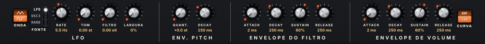

AURA Synth Bass
O sintetizador de baixo feito para tocar ao vivo.
- 3 osciladores, sub e ruído com filtro de 24 dB
- Efeitos, delay, reverb e arpejador
- Setlist, pânico e modo ao vivo para o palco
- MIDI por USB e Bluetooth, com mapeamento fácil
- Manual completo em português
Sem cartão para testar. Uma chave vale para 3 aparelhos seus. Garantia de 7 dias.
Visão geral
O AURA foi desenhado como um instrumento de verdade: painel escuro com serigrafia, knobs de metal, madeira nas laterais e um visor luminoso. Tudo o que importa para um baixo sintetizado está à vista, sem menus escondidos.
Instale como programa independente ou use como plugin VST3/AU no Reaper e em outras DAWs. O instalador traz tudo junto.
Recursos
Som de verdade
Três osciladores, sub, ruído, filtro de 24 dB com ressonância e drive, e envelopes completos para volume e filtro.
Pronto para o palco
Botão de pânico, cadeado de tela, modo tela cheia, setlist com Program Change e preset de emergência.
Efeitos e arpejador
Distorção, fuzz, bitcrusher, chorus, phaser, delay, reverb e um arpejador sincronizado ao andamento.
MIDI sem complicação
USB e Bluetooth. Ligue qualquer botão do controlador a qualquer knob em segundos.
Presets e nuvem
Favoritos, categorias, importação e backup. Sincronize seus sons entre aparelhos pela conta na nuvem.
Para iniciantes
Manual ilustrado em português que explica do zero o que cada controle faz.
Conheça por dentro





Download
macOS
macOS 10.15 ou superior · Intel e Apple Silicon
Instala o programa, o VST3 e o AU
Ao abrir pela primeira vez, o AURA funciona por 15 dias com todos os recursos. Depois, insira a chave de ativação.
Requisitos
| Windows | Windows 10 ou 11, 64 bits |
| macOS | macOS 10.15 ou superior, Macs Intel e Apple Silicon |
| Plugins | VST3 (Windows e Mac) e Audio Unit (Mac) para DAWs compatíveis, como o Reaper |
| Memória e espaço | 4 GB de RAM e cerca de 400 MB livres |
| MIDI | Opcional: controlador MIDI USB ou Bluetooth |
| Internet | Só para ativar e, de tempos em tempos, confirmar a licença |
Instalação e licença
- Baixe e instale. O instalador coloca o programa e os plugins no lugar certo.
- Use por 15 dias com todos os recursos, sem cadastro.
- Ative com a chave recebida por e-mail após a compra: cole no AURA e toque em Ativar.
- Use em até 3 aparelhos seus. Para trocar de computador, desative o antigo dentro do AURA e ative no novo.
Sem internet o AURA continua funcionando por até 30 dias entre as confirmações da licença.
Manual
Manual completo em português, com telas numeradas, conceitos de síntese para quem nunca usou um sintetizador, receitas de som, o menu Ajustes explicado item por item e solução de problemas.
Dúvidas frequentes
Posso instalar em mais de um computador?
Sim. Cada chave vale para até 3 aparelhos seus. Para mudar de aparelho, desative um deles dentro do AURA e ative no novo.
O que acontece depois dos 15 dias?
O AURA pede a chave de ativação. Seus presets continuam salvos.
Preciso de internet para usar?
Só para ativar e confirmar a licença de tempos em tempos. Depois o AURA funciona offline por até 30 dias entre as confirmações.
O Windows ou o Mac avisa que o instalador é de um desenvolvedor desconhecido.
Se aparecer o aviso, confirme que o arquivo veio desta página. No Windows: “Mais informações” → “Executar assim mesmo”. No Mac: clique com o botão direito no instalador → “Abrir”.
Funciona com o meu teclado MIDI?
Com qualquer controlador MIDI USB compatível com o seu sistema, e também por Bluetooth MIDI em computadores que oferecem esse recurso.
E se eu não gostar?
Você tem 7 dias de garantia: reembolso integral e a licença é desativada.